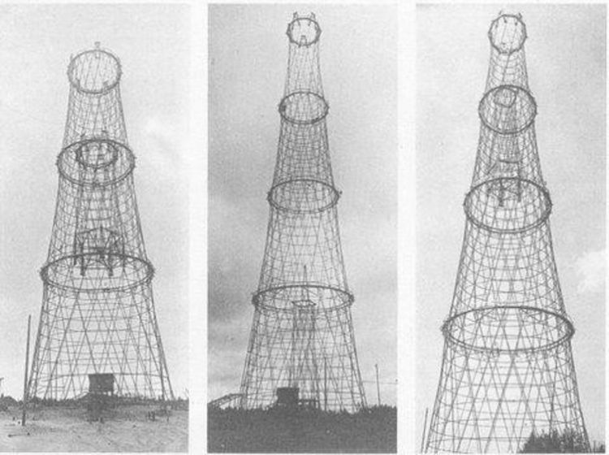

Наша дача – территория необычных строительных решений и экспериментов. Возводить типовые коробки домиков и сараев достаточно скучно, а вот пробовать разные интересные инженерные конструкции – совсем другое дело. Меня всегда привлекали созданные более ста лет назад инженером Шуховым башни-гиперболоиды.

Поэтому, когда зашла речь о строительстве небольшой водонапорки, решено было изготавливать именно гиперболоид. Ну, или, некое подобие его, на доступном нам технологическом уровне.
Описание этапов:
- Описание конструкции
- Сборка
- Эксплуатация
- Выводы